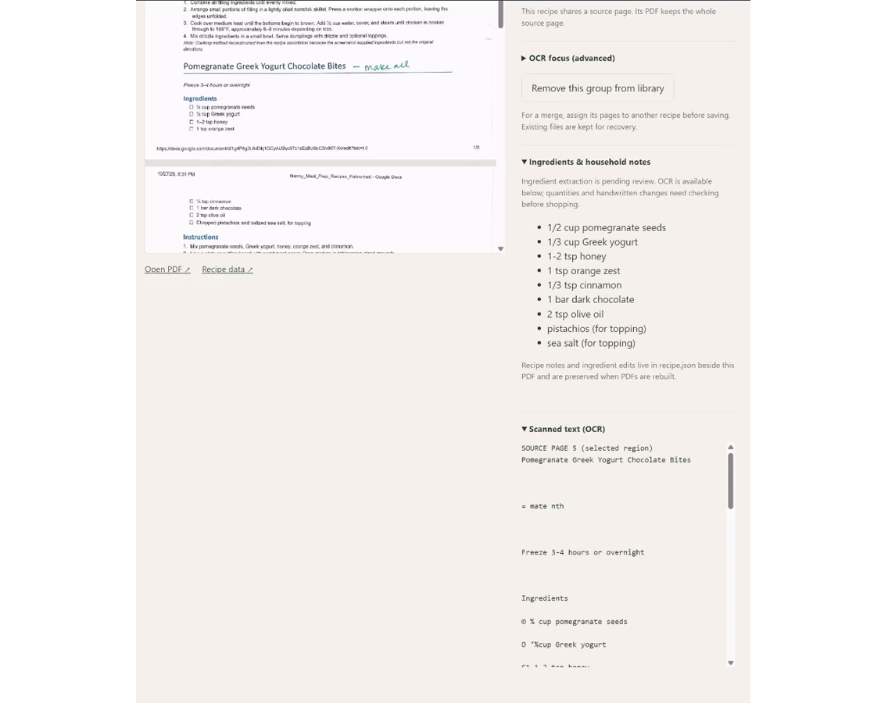

recetas03 / 11
OCR reads the scan. We check the ingredients.
OCR turns the page into text. Each ingredient gets a name, amount and unit.
Fractions, handwriting and missing quantities still need review.
The original scan remains beside the editable ingredient list.
